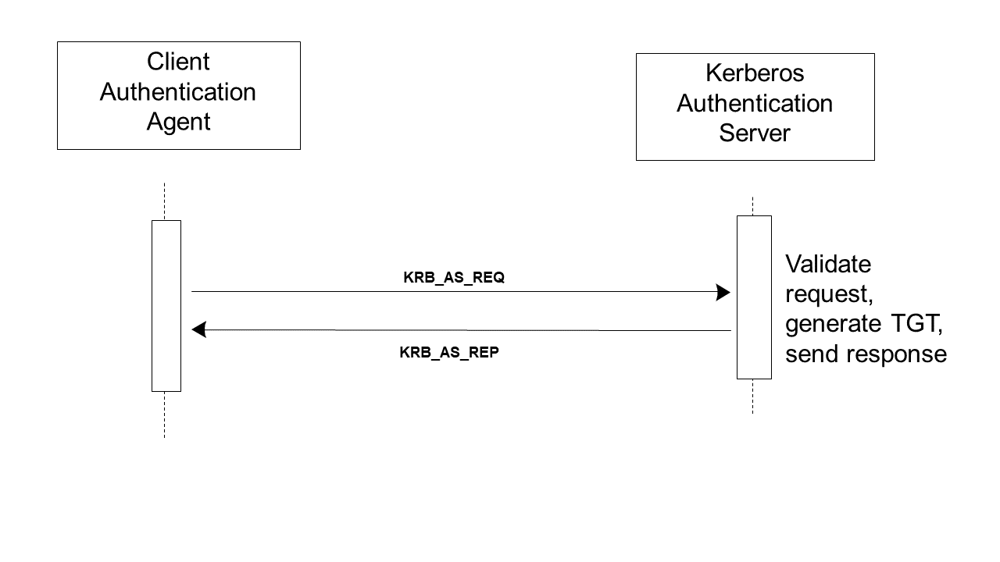

3.2 Get User Authentication [ITI-2]
This section corresponds to transaction [ITI-2] of the IHE IT Infrastructure Technical Framework. Transaction [ITI-2] is used by the Client Authentication Agent and Kerberos Authentication Server Actors.
3.2.1 Scope
This transaction is used to authenticate an enterprise-wide user identity. A challenge-response method verifies that the user knows the correct password. Once the user is authenticated, the Kerberos Authentication Server sends a Ticket Granting Ticket (TGT) to the Client Authentication Agent to permit optimization of subsequent interactions. The TGT acts as a substitute for repeated login/password type activity.
This transaction is equivalent to what is called the “Authentication Service” in RFC1510.
3.2.2 Use Case Roles
Actor: Client Authentication Agent.
Role: Communicates authentication information to the Kerberos Authentication Server, receives a TGT, and performs internal TGT management.
Actor: Kerberos Authentication Server. In RFC1510 this is called a Key Distribution Center (KDC).
Role: Verifies the authentication information, creates a TGT, and sends it to the Client Authentication Agent.
3.2.3 Referenced Standard
RFC1510 The Kerberos Network Authentication Service (V5)
3.2.4 Messages
The Client Authentication Agent communicates to the Kerberos Authentication Server a Kerberos Authentication Service Request (KRB_AS_REQ). This message identifies the user, the name of the ticket-granting service and authentication data. The authentication data is usually a timestamp encrypted with the user’s long-term key. (See RFC1510 for the exception cases.)
Figure 3.2.4-1: Get User Authentication Messages
3.2.4.1 Get User Authentication (Request/Response)
3.2.4.1.1 Trigger Events
The Kerberos User Authentication transactions normally take place:
- Upon login or session start for a new user, and
- Shortly before expiration of a TGT. TGT timeouts are selected to minimize the need for this transaction, but they may expire prior to user logout/ session complete.
When the Client Authentication Agent supports the Authentication for User Context Option, the Client Authentication Agent shall resolve any Context Manager interface issues before starting the user authentication. For instance, the Client Authentication Agent needs to be sure that it will be accepted by the Context Manager as the one and only user authenticator in the context for this user session. Similar issues may apply with non-IHE uses of CCOW.
3.2.4.1.2 Message Semantics
The Client Authentication Agent shall support use of this transaction with the Kerberos user name/password system defined in RFC1510. The username and password shall consist of the 94 printable characters specified in the International Reference Version of ISO-646/ECMA-6 (aka U.S. ASCII).
3.2.4.1.3 Expected Actions
The Client Authentication Agent shall perform TGT management, so that subsequent activities can re-use TGTs from a credentials cache. The Client Authentication Agent shall ensure that a user has access to only to his or her own tickets (both TGT and Service Tickets). This is most often done by clearing the credentials cache upon user logout or session completion.
When the Client Authentication Agent supports the Authenticator for User Context Option, the agent shall perform the Change Context Transaction to set the user identity in the context managed by the Context Manager.
When the user session ends, the Client Authentication Agent shall remove the user credentials from its cache. If it supports the Authenticator for User Context Option, the agent shall perform the Change Context Transaction to set the user to NULL prior to removing the user credentials.
3.2.5 Extended Authentication Methods
The Kerberos challenge-response system used by this Integration Profile can be used to verify users by means of many authentication mechanisms. The mechanism specified in this profile is the Kerberos username and password system. Other methods such as smart cards and biometrics have also been documented but not standardized. (See ITI TF-1: Appendix D for a discussion of alternate authentication mechanisms.)
3.2.6 Audit Record Considerations
The Client Authentication Agent shall produce the ATNA UserAuthenticated event for each Get Authentication [ITI-2] transaction with the EventTypeCode equal to Login or Failure as appropriate. If the application knows about logout, this shall produce a UserAuthentication event with the eventTypeCode of Logout. The UserName element shall be the Kerberos identity in the form of username@realm.
| Field Name | Opt | Value Constraints | |
|
Event
AuditMessage/
|
EventID | M | EV(110114, DCM, “User Authentication”) |
| EventActionCode | M | “E” (Execute) | |
| EventDateTime | M | not specialized | |
| EventOutcomeIndicator | M | not specialized | |
| EventTypeCode | M |
EV(110122, DCM, “Login”) EV(110123, DCM, “Logout”) |
|
| Source (1) | |||
| Human Requestor (1) | |||
| Destination (0) | |||
| Audit Source (Client Authentication Agent) (1) | |||
| Participant Object (0) | |||
Where:
|
Source
AuditMessage/
|
UserID | M | The process ID as used within the local operating system in the local system logs. |
| AlternativeUserID | U | not specialized | |
| UserName | U | not specialized | |
| UserIsRequestor | U | not specialized | |
| RoleIDCode | M | EV(110150, DCM, “Application”) | |
| NetworkAccessPointTypeCode | M | “1” for machine (DNS) name, “2” for IP address | |
| NetworkAccessPointID | M | The machine name or IP address |
|
Human Requestor (if known)
AuditMessage/
|
UserID | M | Identity of the human that initiated the transaction. |
| AlternativeUserID | U | not specialized | |
| UserName | U | not specialized | |
| UserIsRequestor | U | not specialized | |
| RoleIDCode | U | not specialized | |
| NetworkAccessPointTypeCode | U | not specialized | |
| NetworkAccessPointID | U | not specialized |
|
Audit Source
AuditMessage/
|
AuditSourceID | U | not specialized |
| AuditEnterpriseSiteID | U | not specialized | |
| AuditSourceTypeCode | U | not specialized |